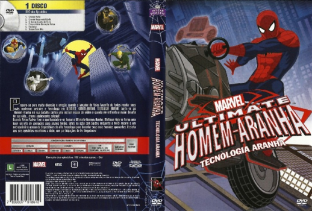

Outro Título:Marvel's Ultimate Spider-Man: Spider Technology
País:United States, 132 minutos
Idiomas falados:Inglês
Gênero(s):Animação, Comédia
Diretor(s):Gary Hartle, Roy Burdine
Escritor(es):Joe Kelly, James Felder, Paul Dini, Marty Isenberg, Danielle Wolff
Codec:MPEG-2 (DVD)
Número: 5808


Certificado:L
Sinopse:
Prepare-se para muita diversão e emoção quando o lançador de teias favorito de todos revelar seus mais modernos veículos e tecnologia em Ultimate Homem-Aranha: Tecnologia Aranha.
Junte-se ao Homem-Aranha em sua batalha contra uma incrível equipe de vilões e quando ele enfrenta o maior desafio de sua vida... drama adolescente colegial! Quando Peter Parker tem a oportunidade de se tornar o Ultimate Homem-Aranha, Midtown High se torna uma base secreta de operações para jovens heróis. Entre na ação com Spidey enquanto o herói recorre a um extraordinário acervo de dispositivos de alta tecnologia para derrotar seus mais temidos oponentes.
Elenco:


Tipo de mídia: DVD5,
Legendas: Português, Sem Legendas
Alugado: Não
Tela: Anamorphic Widescreen